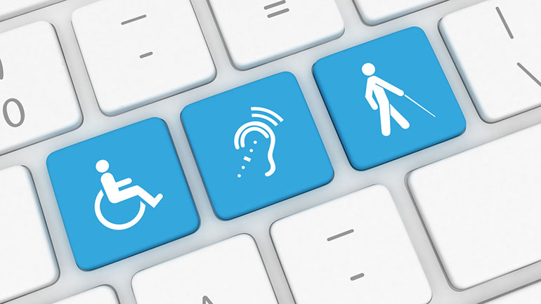
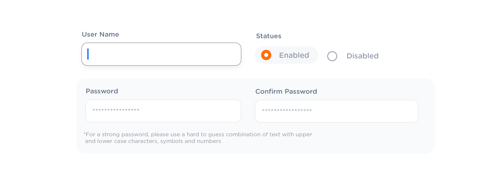

Design
Guide
OXD Introduction
Design Thinking
UX Standards
Visual Design
Grid & Layout
Navigations
Components
 UI Behaviours
UI Behaviours
 QA Standards
QA Standards
Buttons
Text-box
Check-box
Radio
Radio Pils
Switch
Search-box
Multi Select
Dropdown
Number Dropdown
Upload Inputs
Upload input box
Date picker
Time picker
Color picker
Labels
Help Lable
Status lable
Group Input
Group Overlay
Scroll-bar
Count Slider
Text-area
Comment-box
Paginations
Card loader
Divider
Tables & List View
Cards & Shapes
Modals & Popups
Advance Components
Charts
Keyboard Accessibility Development Guide

Users should be able to trigger and edit every field using only the keyboard. Power users, who tend to use keyboards heavily, should be able to navigatethe form using Tab and make necessary edits, all without lifting their fingers off the keyboard. You can find detailed requirements for keyboard interaction pattern in W3C’s Authoring Practices for Design Patterns.
How to support accessibility for new OHRM
- When clicking on a menu item, the focus should be moved to the right side content. The top left tabbable element in the right panel should get the default focus.
- The focus should move from left to right and top to bottom with tabbing.
- All the interactive elements should be tabbable and should perform the same activities using both the mouse and the keyboard.
- When implementing, use the native HTML elements for the UIs. Ex:
- Clickable images (pointer clickable but not keyboard clickable) : Instead use: Buttons
- Clickable icons (pointer clickable but not keyboard clickable) : Instead use: IconButtons (Vue js) Or wrap icons with buttons ( Vuetify library)
- Clickable div elements as buttons (pointer clickable but not keyboard clickable) : Use buttons where necessary or make divs focusable and clickable via keyboard Drop down list items in modals are anchor elements without href attributes. ( makes them non focusable and non clickable ) : use href attribute inside tag
- HTML anchor tags designed as buttons where the usage of buttons is more convenient
- If the proper HTML elements are not used, use [tabindex=0] to enable tabbing
- If there are CSS changes when hovering over the element, set that CSS for the element when the :focus is active.
- If there are methods classed based on click events, the same method should be triggered when the enter key is pressed.
- The first HTML element should be set to focus when forms are opened. This can be achieved by using v-set-tab-focus-to-first-element in a vue form.
- When the modal is opened, the focus should be trapped within the modal and should not move to page. This can be achieved by using the ‘v-trap-tab-focus’ directive.
- Clicking on the escape should close the modal window.
- When the modal is closed, the focus should be returned to the element which triggered the modal and if that element is not visible, the focus can be reset to the default.
- Support Ctrl + F to navigate to the search option in the menu
Tab order accessibility standards WCAG 2.0

Souses : https://www.w3.org/WAI/WCAG21/quickref/
- All content accessible: All functionality of the content is operable through a keyboard interface without requiring specific timings for individual keystrokes, except where the underlying function requires input that depends on the path of the user's movement and not just the endpoints..
- Must be keyboard trap free: If keyboard focus can be moved to a component of the page using a keyboard interface, then focus can be moved away from that component using only a keyboard interface, and, if it requires more than unmodified arrow or tab keys or other standard exit methods, the user is advised of the method for moving focus away. Eg: Esc key to close modal
- Active only on focus: The keyboard shortcut for a user interface component is only active when that component has focus.
- Meaningful focus order: If a Web page can be navigated sequentially and the navigation sequences affect meaning or operation, focusable components receive focus in an order that preserves meaning and operability.
- Focus visibility: Any keyboard operable user interface has a mode of operation where the keyboard focus indicator is visible.
- Components should not change context on focus: When any user interface component receives focus, it does not initiate a change of context.
General Keyboard controls for standard websites
Known Anomalistic Behaviours of tab Focus in the System and reasons
- Tab focus lost to the browser upon a modal being closed.
- Tab focus issues erupted by single loading multiple components.
- Tab focus jumps on the keyboard clicking on certain components.
Standard Modal behaviour
- Keyboard focus should switch from the base page to the modal and the focus should be initially on an interactive element on the modal.
- The initial focus element should be visually and DOM wise in a topmost position in the modal.
- All the interactive elements should be focusable and usable only using the keyboard.
- Focus traps should be used to keep the focus on the modal but the ability to close the modal anytime using Esc key should be implemented.
- After the modal is closed the focus should return to the element which triggered the modal. If it's not possible a suitable and convenient element should be getting the focus after the modal is closed.